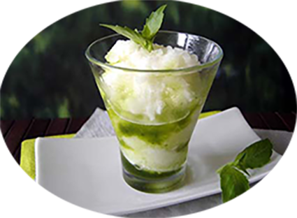

Sorbet au citron

Pour 6 personnes
Préparation : 15 mn
Repos 4h
Ingrédients:
- 3 citrons
- 200 g de sucre
- 2 blancs d'œufs
- 1 zeste de citron
- demi-litre d'eau
Recette
- Compressez les citrons afin de récupérer le jus.
- Puis, prenez le zeste d'un citron et râpez-le.
- Pour avoir le sirop de sucre, déposez le sucre dans un verre mesureur et versez l'eau.
- Portez à ébullition et faites dissoudre le sucre.
- Mettez au froid.
- Incorporez le jus des citrons avec le zeste ainsi que le sirop de sucre.
- Disposez le mélange dans un bac à glace posé dans le freezer.
- Ensuite, rajoutez les blancs et continuez à travailler afin qu'ils montent.
- Congelez dans le freezer.
|